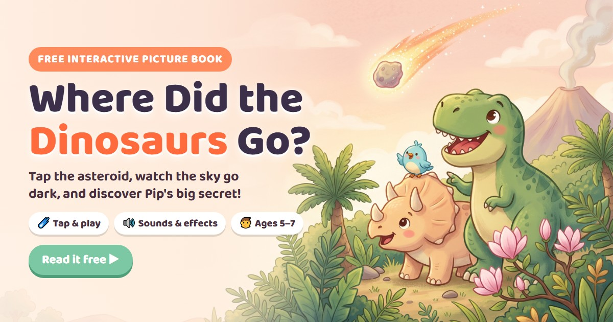
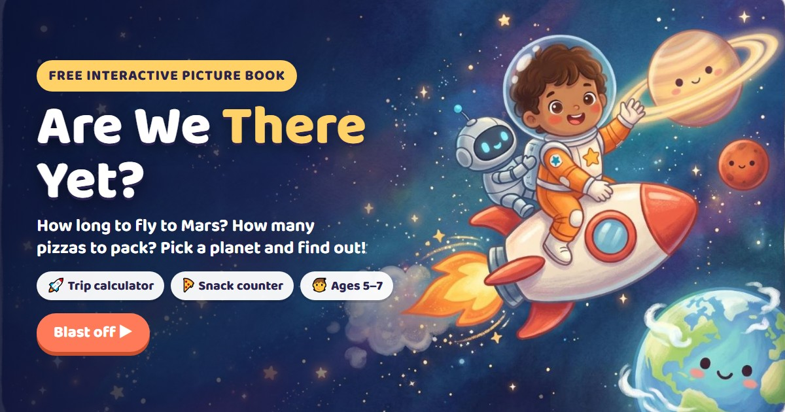
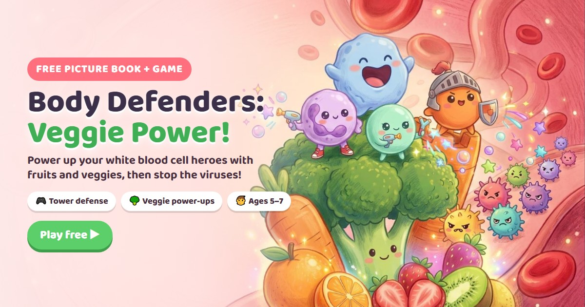
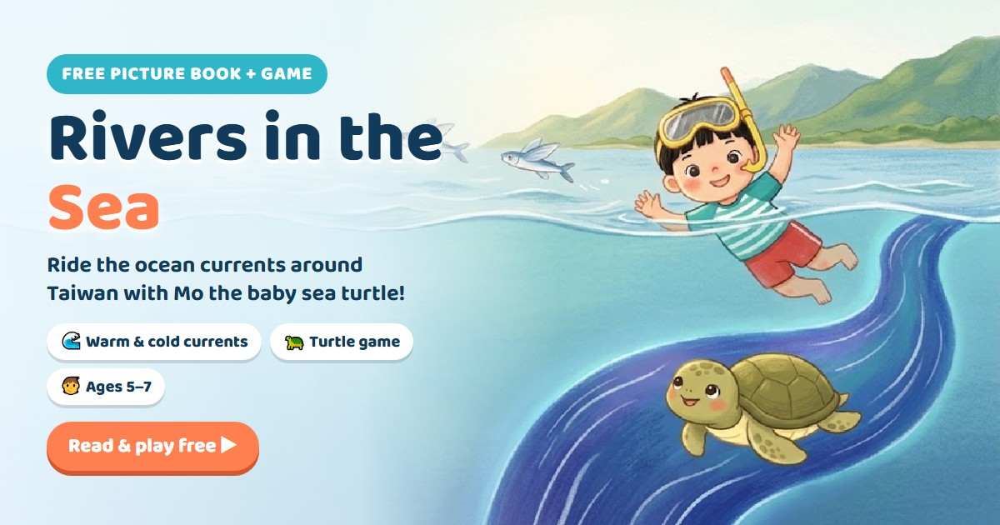

📚 Tap & Learn Picture Books
Cute, true science stories for kids aged 5–7. Tap the pictures, hear the story read aloud, and play with sounds and effects!

Where Did the Dinosaurs Go?
Tap the asteroid, watch the sky go dark, find the survivors, and learn why birds are living dinosaurs.
Read now ▶
Are We There Yet?
Pick a planet and a ride. How long is the trip? How many pizzas to pack? How old will everyone be when you get home? Plus the rocket game Space Clean-Up!
Blast off ▶
Body Defenders: Veggie Power!
Meet the white blood cell heroes inside you, power them up with fruits and veggies, then play an 8-level tower defense game.
Read & play ▶
Rivers in the Sea
Ride the warm Kuroshio and the cold winter current around Taiwan with Mo the baby sea turtle, then play Ride the Current!
Read & play ▶